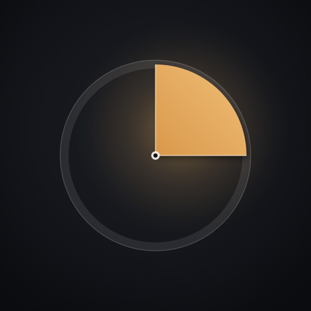
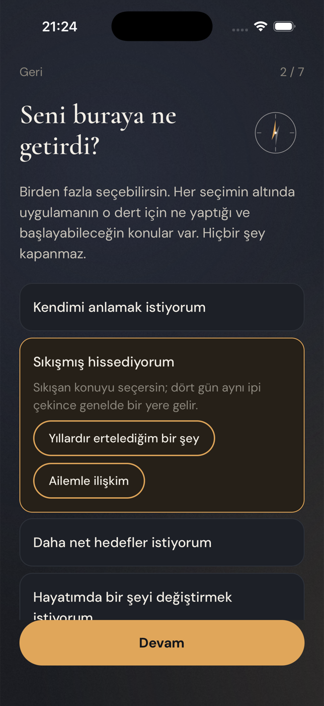
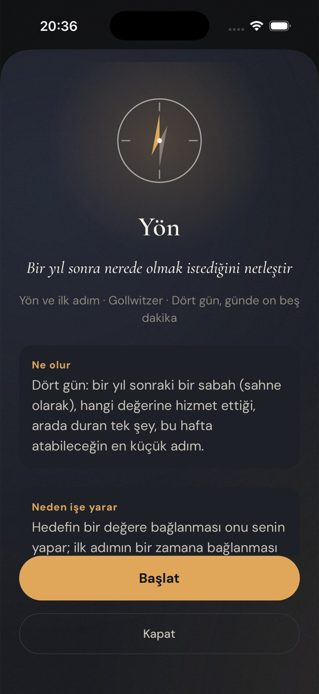
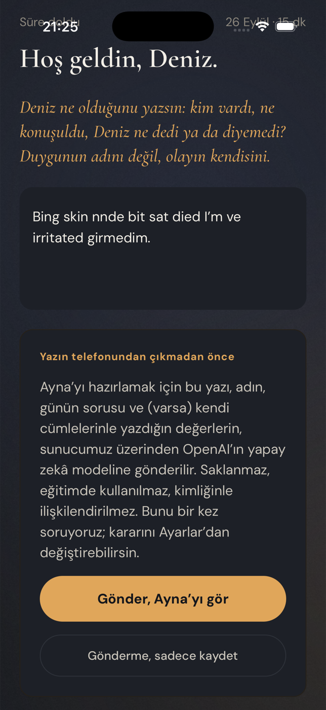

A question you can picture
Not “how do you feel about your father” but “the first scene that comes up at the word father: where are you, who is there, what is said?” A scene, not the name of a feeling.
 Hawk & Mason
Hawk & Mason
Fifteen minutes a day, on a subject you chose.
There is a subject that has been going round your head for months: a work idea, a family matter, a decision you cannot make. Pondr gives it a fifteen-minute appointment a day. You choose the subject. The app asks one concrete question and keeps it on the screen while the phone lies face down. Then you write a page. Then the mirror does what a good friend does: reads what you wrote from outside, in your name and in the third person, and asks exactly one question. Tomorrow you sit with that question.
Not “how do you feel about your father” but “the first scene that comes up at the word father: where are you, who is there, what is said?” A scene, not the name of a feeling.
The question stays on the screen; you are not meant to look at it. Under fifteen minutes the measured effect of this kind of writing disappears, so the clock is not a setting.
Writing is the one step with randomised-trial evidence behind it. Five words are enough on a bad day; “nothing to say” is an answer the app accepts without comment.
A short note about what it noticed, in the third person and by your name, and one question that puts you outside your own situation. No advice, no praise, no verdict. It is not a chat: its turn is tomorrow.
Four sittings on one subject make an arc. At the end the app puts what you wrote on the first day next to what you wrote on the fourth. No score, no graph. The distance between two sentences is yours; nobody can hand it to you, because you wrote both.
Four days to find what you actually care about, in your own sentences, not from a list. Every later module reads these three lines.
One morning a year from now, as a scene. Which value it serves, the one thing in the way, and the smallest step this week: what, when, where.
Name it, see where it runs your life, and write a ten-minute safe step you choose yourself. The app never proposes the step.
Four days on a habit, a goal or a belief that no longer fits; or on one decision, from every side. The app never decides. “Not yet, because…” counts.
Once a month, seven lines from above: time, energy, people, money, attention, alignment. And once, a sealed letter that opens a year from today and asks what changed.
One hard thing a year, with milestones and a story at the end. One page on how you want to live, drafted from your own conclusions. And the whole of it on one screen.
What you write stays on your phone. There is no account, because we do not want your data.
To prepare the mirror, that day’s entry, your first name and the day’s question go once through our server to OpenAI’s model and come back as a note and a question; nothing is stored on the way, and entry text is never logged. The app asks your explicit permission before the first send, and “don’t send, just save” is a real option. Entries that show signs of crisis never leave the phone at all; a human-written support screen appears instead.
PONDR



Why fifteen minutes, why four days, why the third person.
Fifteen minutes because in the expressive-writing research the effect disappears below that dose. Four sittings because the benefit does not show before the third. The third person because looking at yourself from outside lowers the heat and sharpens the judgement (Kross). A question kept on the screen because people think better with one in front of them (Westgate). A subject you chose because assigned solitude does not work (Ryan & Deci). What we sell is not psychological change; it is the felt experience of having actually thought about something, which is the best-evidenced effect there is.Pondr is a thinking and writing app, not therapy and not a medical service. If the mirror misread you, tell us the day and the sentence; that is the feedback that improves it fastest.